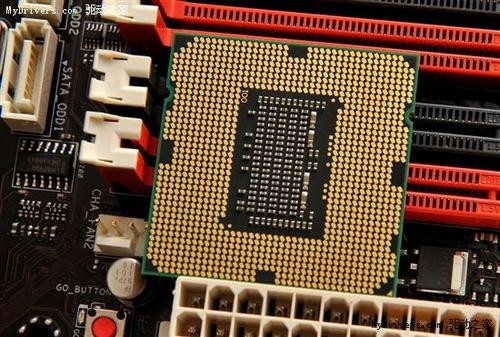
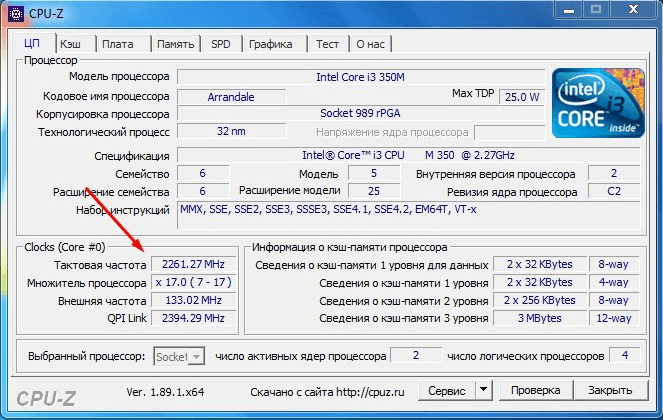
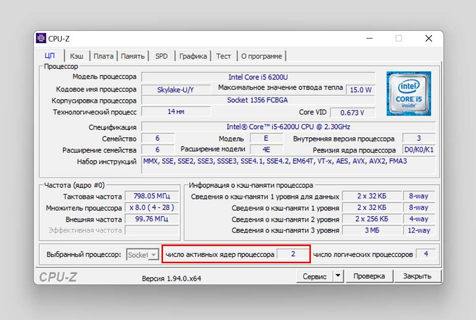
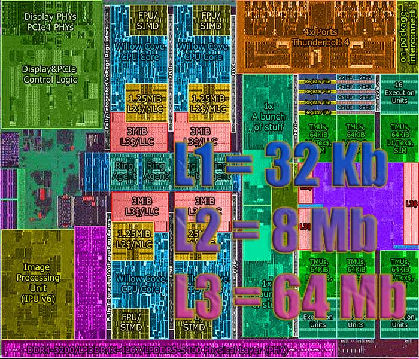
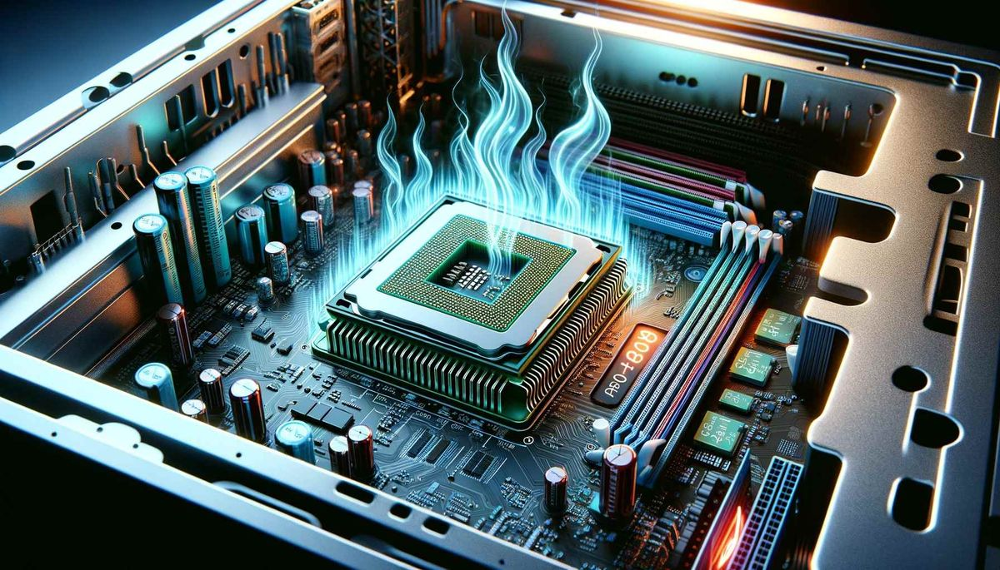

О процессорах
Сокет
Сокет процессора — это разъем на материнской плате, предназначенный для установки центрального процессора (ЦП), который определяет совместимость между процессором и материнской платой. Обычно он обозначается кодовым названием (LGA 1700, AM5, LGA 775, AM3+).
Сокеты отличаются формой, количеством металлических контактов и их распиновкой. Контакты отвечают за питание, передачу данных и связь с оперативной памятью. Повреждение контактных ножек может привести к сбоям или полной неработоспособности ПК. Восстановление возможно, но требует ювелирной работы.
Тактовая частота
Тактовая частота измеряется в гигагерцах (ГГц) и показывает, сколько операций процессор выполняет за секунду. Более высокая частота — выше скорость, но архитектура тоже играет роль.
Процессоры с одинаковой частотой могут иметь разную производительность из-за различий в архитектуре и оптимизации. Поэтому частота — не единственный критерий при выборе.
Количество ядер
Современные процессоры могут иметь от 2 до 64 ядер. Каждое ядро — это отдельный вычислительный блок, способный выполнять задачи параллельно. Больше ядер — лучше многозадачность и производительность в сложных приложениях.
Для повседневных задач большое количество ядер не всегда критично, но для рендеринга, научных расчётов и баз данных — важно.
Кэш-память
Кэш — это быстрая память внутри процессора. Она хранит часто используемые данные и инструкции. Разделяется на уровни: L1 (самый быстрый), L2 и L3 (самый ёмкий).
Большой объём кэша ускоряет работу, снижает задержки и повышает производительность. Но увеличивает стоимость процессора.
TDP (Тепловая мощность)
TDP — это количество тепла, которое процессор выделяет при полной нагрузке. Чем выше TDP, тем мощнее должна быть система охлаждения.
Высокий TDP влияет на энергопотребление и требует продуманного охлаждения: мощные кулеры или жидкостные системы.